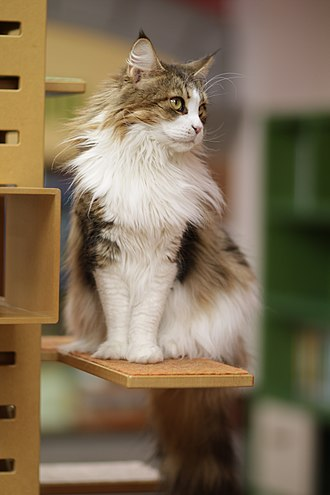

Kucing
Pengertian Kucing
Kucing, disebut juga sebagai kucing domestik[ atau kucing rumah (nama ilmiah: Felis silvestris catus atau Felis catus), adalah sejenis mamalia karnivora dari keluarga Felidae. Kata "kucing" biasanya merujuk kepada "kucing" yang telah dijinakkan, tetapi bisa juga bisa merujuk kepada "kucing besar" seperti singa dan harimau yang juga termasuk jenis kucing.
Ras Kucing
Salah satu ras kucing yaitu Maine Coon. Maine Coon adalah ras kucing yang berasal dari Maine, Amerika Serikat. Kucing ini merupakan keturunan dari ras kucing Anggora dan American Shorthair. Sifat kucing ini adalah lucu, pemalu, dan mudah akrab. Bulunya tipis, lembut, dan terdapat beragam warna.
Ciri Khas
- Memiliki badan dengan ukuran besar
- Memiliki mata lebar dan oval
- Memiliki hidung yang lebar dan melengkung dibagian ujungnya
- Memiliki ekor yang panjang dan lebar
- Memiliki otot dan tulang yang kuat
- memiliki telinga yang besar
- Memiliki Bulu yang tebal